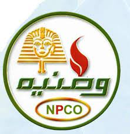

يمكنك العثور على أقرب محطة وقود إليك واتجاهها والوقت المستغرق للوصول اليها و نوع الوقود الذي تحتاجه وايضا الدفع السريع من خلال شحن التطبيق و من ثم استخدام ماسح للحصول علي خصومات و هدايا مع كل استخدام
اعرف عن أهم محطات الوقود
تمتلك توتال TOTAL حوالي 239 محطة خدمة في جميع أنحاء مصر و تتمثل مهمة توتال TOTAL مصر في توفير وتقديم منتجات وخدمات عالية الجودة لعملائها. وتقوم توتال TOTAL مصر ببيع وتوزيع وقود وزيوت تشحيم عالية الجودة وكذلك خدمات ومنتجات أخرى متعددة في متاجر بونجور
بنزينة Challo Out هي سلسلة محطات وقود مصرية مملوكة لشركة Challo Petroleum Company، وهي إحدى شركات القطاع الخاص. تأسست الشركة في عام 2023، وبدأت في تشغيل محطاتها في عام 2024.
تنتشر محطات Challo Out في جميع أنحاء مصر، وتتميز بتوفير المنتجات البترولية بأسعار تنافسية، بالإضافة إلى تقديم خدمات أخرى للعملاء، مثل غسيل السيارات وإصلاحها.
بنزينة Masr هي سلسلة محطات وقود مصرية مملوكة لشركة Masr Petroleum Company، وهي إحدى شركات القطاع الخاص. تأسست الشركة في عام 2022، وبدأت في تشغيل محطاتها في عام 2023.
تنتشر محطات Masr في جميع أنحاء مصر، وتتميز بتوفير المنتجات البترولية بأسعار تنافسية، بالإضافة إلى تقديم خدمات أخرى للعملاء، مثل غسيل السيارات وإصلاحها.
هي إحدى شركات قطاع البترول المصري, والتي تأسست عام 1934 كأول شركة وطنية لتسويق المنتجات البترولية بإدارة مصرية. وتمتلك الشركة مكتبا يمثلها في كل محافظة من محافظات جمهورية مصر العربية يقدم كافة الخدمات البيعية والفنية والاستشارات لعملاء الشركة بمختلف أنشطتهم

بنزينة وطنية هي سلسلة محطات وقود مصرية مملوكة للشركة الوطنية لبيع وتوزيع المنتجات البترولية، وهي إحدى شركات القوات المسلحة المصرية. تأسست الشركة في عام 2010، وبدأت في تشغيل محطاتها في عام 2011.
تنتشر محطات وطنية في جميع أنحاء مصر، وتتميز بتوفير المنتجات البترولية بأسعار تنافسية، بالإضافة إلى تقديم خدمات أخرى للعملاء، مثل غسيل السيارات وإصلاحها.
بدأت عمليات إكسون موبيل في عام 1902، وهي معروفة بتوفير مواد التشحيم والوقود عالية الجودة بالإضافة إلى منتجات الراحة. تقدم أكثر من 350 محطة خدمة وأكثر من 40 مركزًا من مراكز موبيل 1 ومجموعة متنوعة من المنتجات الصناعية وبرامج وخدمات التشحيم. تتميز بعض المحطات في القاهرة والإسكندرية والجيزة بمتاجر أون ذا ران الصغيرة